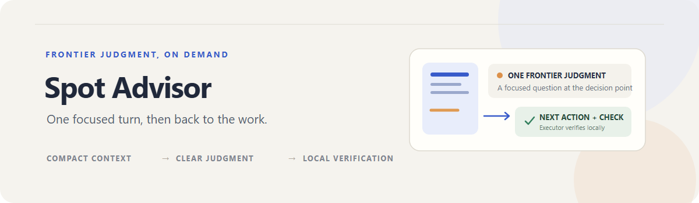

Keep the work local
Your coding agent checks the test, dependency, fixture, and current revision. It chooses what evidence belongs in the packet.
A coding-agent skill · Release 2.2
Give a frontier model the evidence and the decision in front of you. Get one recommendation and a way to check it. Your coding agent keeps control of the work.
Preview needs no account, API key, or model call.

01 — THE MOMENT IT HELPS
Run the relevant local check first. If the evidence still leaves materially different next actions, Spot Advisor helps your agent ask about that fork instead of handing off the whole task.
Your coding agent checks the test, dependency, fixture, and current revision. It chooses what evidence belongs in the packet.
Preview a compact question with the goal, constraints, observations, and acceptance check. Send only when the answer could change the next move.
The advisor returns a verdict, a concrete action, a verification step, and a risk. Your agent makes the edit and checks it locally.
Small boundary, clear ownership. Spot Advisor doesn’t inspect your repository or edit files. The executor selects evidence, applies advice, and owns the final result.
02 — TRY IT BEFORE YOU INSTALL
Run the preview from a checkout. It prints a sample v2 packet locally and makes zero model calls. No account or credentials are needed.
Read the README walkthroughpython skills/advisor/scripts/ask_expert.py \
--preview --protocol v2 \
--question "A test expects False but gets
the default. What should change, and how
should I verify the fix?"GoalPreserve an explicit False override.
EvidenceThe fallback uses value or default.
DecisionWhich next edit handles missing keys safely?
VerifyFalse stays False; missing keys use defaults.

03 — PUT IT IN YOUR WORKFLOW
Use it with Codex, Claude Code, or a compatible gateway. The advisor route and credentials depend on your setup; the offline preview works before any of that.
npx skills add spot-advisor/spot-advisor --skill advisor
Choose your agent when prompted. For manual installation, see the setup guide.
04 — THE EVIDENCE, WITH LIMITS
The public repair comparison is a 48-assignment study of two different workflows. It is evidence about this run, not proof that Spot Advisor saves total tokens or preserves equivalent repair quality.
Price estimates are incomplete. The API-equivalent estimate is $82.82 vs $4.22 for requests with priceable receipts only. Four Astra requests and eight Spot Advisor requests could not be priced, so full-run cost and net savings remain unknown. Repair-quality equivalence was not established.
RESEARCH & REPRODUCTION
The public PDF covers the earlier paired study. The 2.2 manuscript and its remaining comparisons are still in review; they are not presented as published results.
Research packageA SMALLER, CHECKABLE ASK